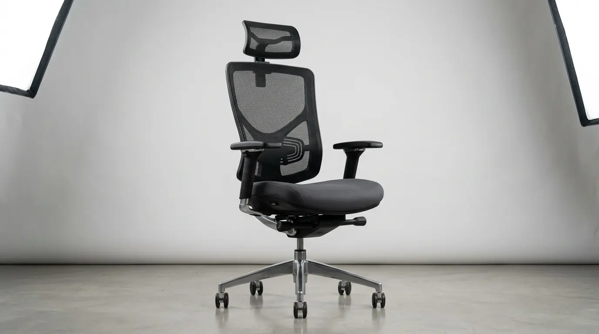

Mengapa Harus Beli Kursi Kantor Ergonomis Grosir untuk Perusahaan?
Dalam perencanaan anggaran pengadaan kantor baru maupun peremajaan inventaris gedung kerja, keputusan untuk beli kursi kantor ergonomis grosir merupakan strategi finansial yang sangat menguntungkan. Mengingat ketersediaan tempat duduk staff berdampak langsung pada produktivitas dan angka ketidakhadiran karyawan akibat pegal linu, memilih unit kursi berkualitas tinggi adalah investasi jangka panjang.
Melakukan pembelian secara eceran per unit seringkali memakan biaya logistik yang mahal serta menimbulkan risiko ketidakseragaman tipe kursi di area kerja open-plan. Sebaliknya, skema pembelian partai besar (bulk purchasing) memberikan potongan harga grosir langsung dari distributor resmi.
Berdasarkan Laporan Riset Pengadaan Perabot Kantor Indonesia 2026, perusahaan yang memanfaatkan program harga grosir B2B berhasil menghemat rata-rata 28 persen dari total alokasi dana belanja perabot. Dana yang dihemat dapat dialokasikan untuk kebutuhan fasilitas operasional gedung lainnya.
Bagi tim General Affair (GA) atau Procurement yang sedang memproses tender pengadaan fasilitas kerja, kami siap memberikan konsultasi katalog dan penawaran terjangkau untuk unit kursi staff serta sarana Perlengkapan Kantor lainnya.
- Mendapatkan potongan diskon kuantitas khusus mulai pemesanan 10 unit ke atas.
- Jaminan warna dan desain seragam untuk seluruh ruang kerja gedung.
- Fasilitas pengiriman gratis (free delivery) dan jasa perakitan tim ahli di lokasi.
Apa Saja Fitur Ergonomis Wajib pada Kursi Staff Perkantoran Modern?
Sebelum menentukan tipe untuk beli kursi kantor ergonomis grosir, pastikan spesifikasi teknis kursi memenuhi standar K3 (Keselamatan dan Kesehatan Kerja) berikut:

Penopang pinggang (lumbar support) dan sandaran jaring breathable mesh — fitur ergonomis wajib untuk pengadaan kursi staff perusahaan.
- Bantalan Penopang Pinggang (Lumbar Support) — Menjaga lengkungan alami tulang belakang bagian bawah agar staff tidak membongkok saat mengetik berjam-jam.
- Sandaran Jaring Breathable Mesh — Bahan jaring berkualitas tinggi yang memfasilitasi sirkulasi udara di punggung sehingga tidak panas dan bebas keringat.
- Sistem Pengatur Ketinggian Hidrolik (Gaslift Class 3/4) — Tuas hidrolik yang dapat dinaik-turunkan secara halus untuk menyesuaikan tinggi kaki pengguna dengan lantai.
- Mekanisme Reclining & Tension Control — Sandaran yang dapat diayunkan ke belakang saat istirahat sejenak untuk melemaskan otot punggung.
- Roda Nilon atau PU Anti-Gores — Roda yang berputar 360 derajat secara senyap tanpa merusak permukaan ubin atau lantai kayu ruang kantor.
Berapa Estimasi Harga Grosir Kursi Kantor Staff (Tiering Price 2026)?
Berikut adalah kisaran acuan harga grosir kursi kantor ergonomis staff di pasar perkantoran Indonesia berdasarkan kualitas material dan fitur:
| Kategori Tipe Kursi | Kisaran Harga Grosir / Unit | Fitur Utama |
|---|---|---|
| Standard Staff Mesh (Ekonomis) | Rp 450.000 - Rp 650.000 | Fix armrest, fixed lumbar support, hidrolik standar, rangka nilon. |
| Ergonomic Staff Mid-Back (Populer) | Rp 700.000 - Rp 950.000 | Adjustable armrest, adjustable lumbar, tilting mechanism, jaring high-density. |
| Premium Staff Full-Option (Managerial) | Rp 1.050.000 - Rp 1.450.000 | Headrest 2D, 3D armrest, aluminium base, garansi hidrolik 3 tahun. |
Bagaimana Tips Menjalankan Prosedur Pengadaan Kursi Kantor B2B?
Agar proses pengadaan perabot gedung berjalan lancar tanpa kendala operasional, terapkan panduan praktis berikut:
- Mintalah sampel unit kursi (mock-up sample) untuk diuji kenyamanannya oleh perwakilan staff sebelum transaksi besar.
- Pastikan harga grosir yang ditawarkan sudah mencakup Pajak Pertambahan Nilai (PPN 11%) resmi untuk kepatuhan pembukuan.
- Sepakati klausul garansi tertulis yang mencakup penggantian suku cadang hidrolik dan roda secara cepat.
- Lengkapi pula kebutuhan meja kerja, filing cabinet, serta unit Perlengkapan Kantor lainnya dari satu vendor terpadu demi efisiensi ongkos kirim.
Pertanyaan Populer Seputar Grosir Kursi Kantor Ergonomis (FAQ)
Kesimpulan Praktis
Mengambil kesempatan untuk beli kursi kantor ergonomis grosir adalah solusi paling efektif bagi perusahaan untuk menghemat alokasi biaya pengadaan tanpa mengorbankan kenyamanan dan kesehatan staff. Pilih tipe kursi bermaterial jaring breathable mesh dengan dukungan lumbar support yang teruji.
Dapatkan estimasi biaya resmi dan katalog pengadaan perabot serta paket Perlengkapan Kantor B2B terbaik hanya dari spesialis kami!

Penulis: Ardhana Prasasta
Spesialis konten & konsultan furnitur tata ruang kantor di Perlengkapan Kantor. Berpengalaman dalam memberikan panduan solusi ergonomis, efisiensi ruang kerja, dan pengadaan perlengkapan kantor korporat.